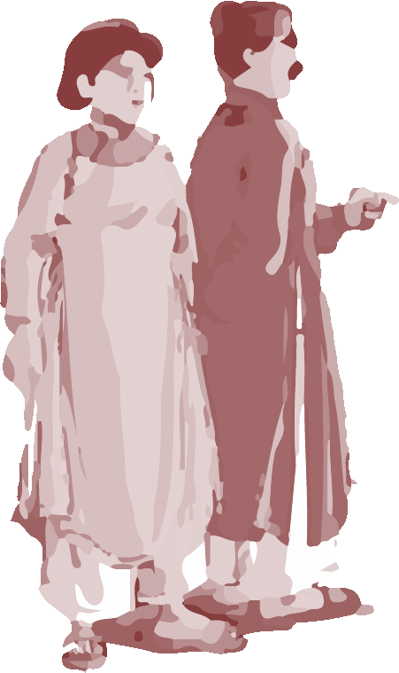
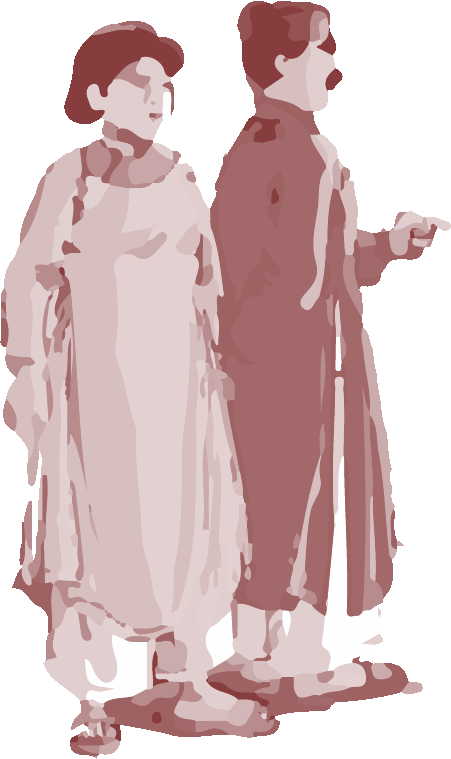

Long. long time ago, there was a rich man living a village. When he died, he left his two sons a huge fortune.
The two brothers were entirely different. The elder was greedy but the younger was very kind. After the father's death, the elder claimed the fortune and left the younger only star fruit tree. The younger always took care of the tree, he watered it every day with the hope that it would give him a lot of fruits so that he could earn some money by selling them. Meanwhile the elder brother was so happy with his inheritance that he had nothing to worry.
 



One day, when the fruits of the tree could be sold, there was a bird came and ravaged them all. The wife lamented: "Poor us, the only thing that we can rely on is what the star fruit tree bring us, but now look, this bird ate they all. We have nothing left". Miracle! The raven upon hearing those lamentations, perched down and replied a human voice: "Star fruits I eat with gold I pay, be ready with a three-foot bag and follow me to get it". Afraid the women ran into the hut to look for her husband. They discussed and decided to sew a bag according to the indicated size, waiting for her return of the bird.
Long. long time ago, there was a rich man living a village. When he died, he left his two sons a huge fortune.
.gif)
 \
\
.gif)

A few days latter, the bird came back, it ate all the star fruits then got down from the tree to invite the husband to take a seat on his back with the bag. Then they disappear together into the horizon. Frightened, the younger brother closed his eyes. The bird took him very far before landing on a deserted island, full of precious stones.
He was free to take whatever he could. He filled the bad and the raven took him back to his home. From then on the couple could live in a luxury life. They often helped the poor. On the occasion of the commemoration of his father's death, he invited the elder brother to come over. The elder brother and his wife were surprised to see the younger couple's wealth. They tried to ask for the reason. The younger brother frankly tell the story of the giant raven that took him to look for gold.
The elder brother wanted to exchange their fortune for the only hut and the star fruit tree. The younger couple agreed. One day the raven came and gave the same recommendation. The elder bought with him double of two 6 foot bag and filled them with gold. On the way came back home, because the overweight of the two bags, the raven could not hold longer. It swayed and sent the elder to the sea where he drowned.
.gif)


.gif)